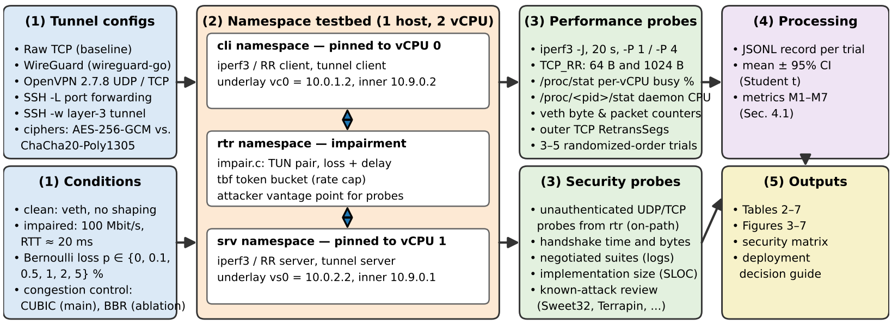
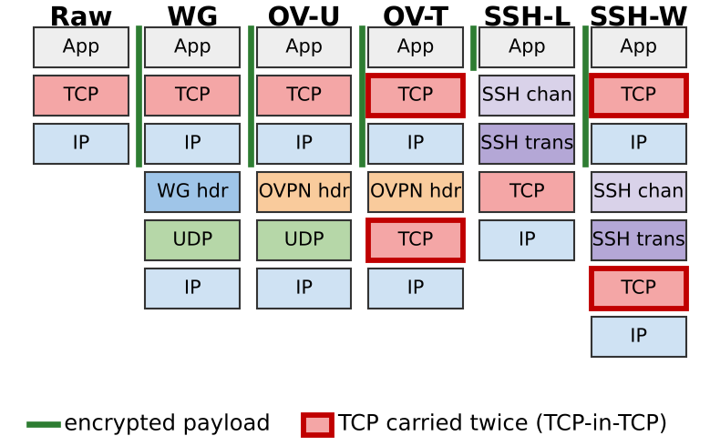
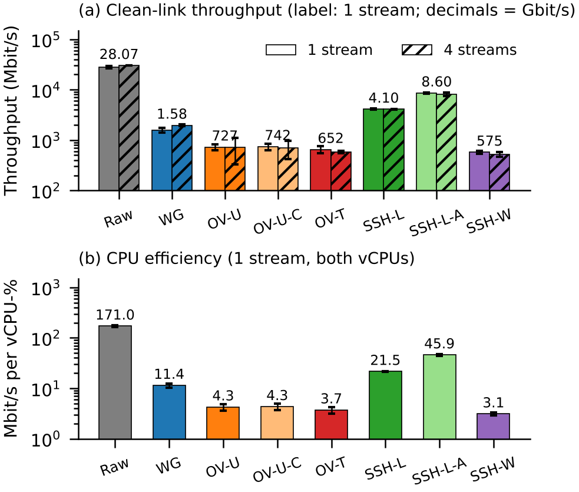
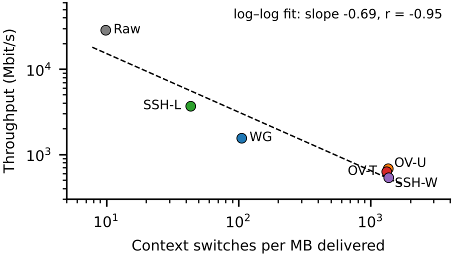
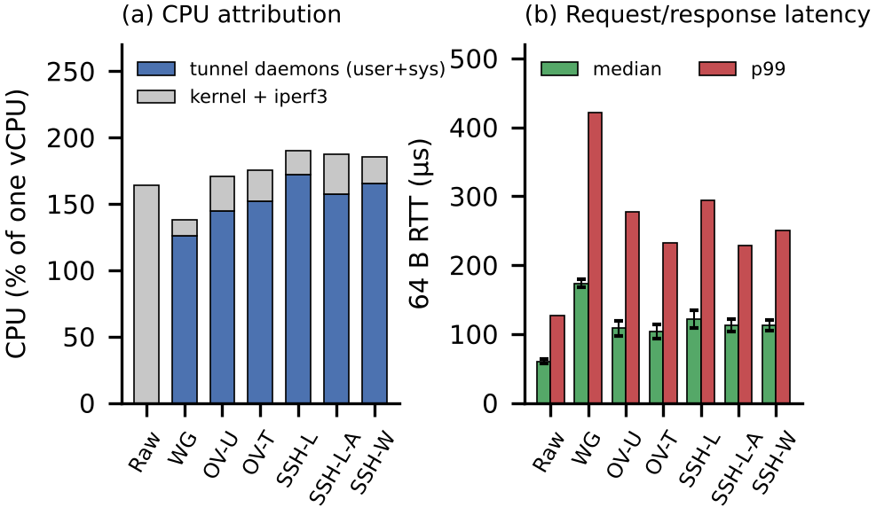
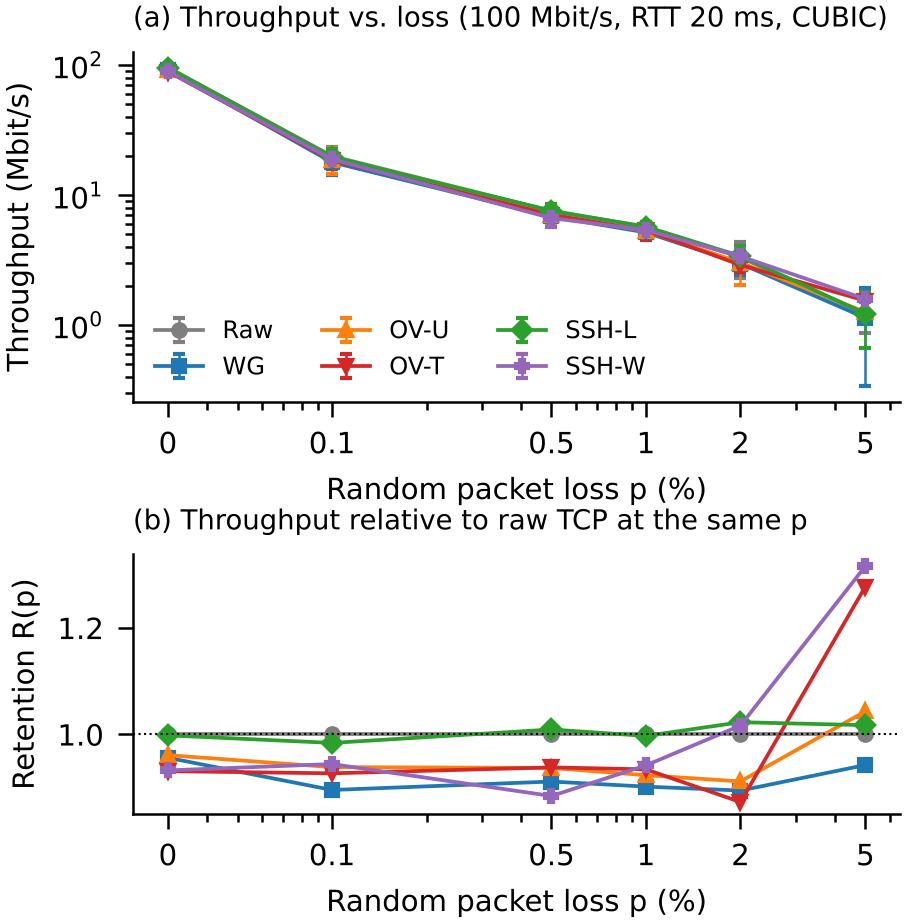
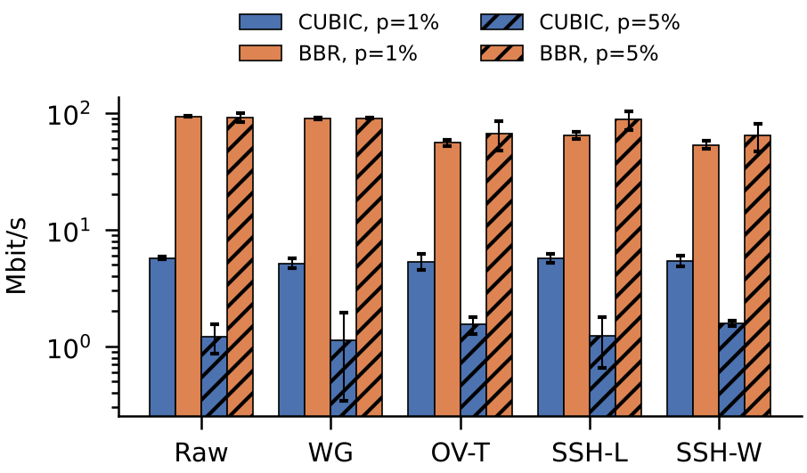

Layer-3 VPNs and SSH tunnels are often deployed interchangeably to protect data in transit, without measured evidence of what each costs. We built an automated, single-host testbed of three Linux network namespaces with a custom loss/delay emulator. On it we compared WireGuard, OpenVPN (UDP and TCP), SSH port forwarding and SSH layer-3 tunnelling against an unencrypted baseline over 3–5 randomized trials. We measured throughput, CPU cost, latency, robustness to packet loss and responses to unauthenticated probes, and derived deployment guidelines.

OpenVPN and SSH -w make about 13× more context switches per MB than WireGuard. Changing OpenVPN's cipher does not change its speed.
With CUBIC every tunnel tracks plain TCP under loss. With BBR, tunnels that carry TCP inside TCP lose 28–43% of their throughput.
WireGuard and tls-crypt OpenVPN ignore unauthenticated probes. sshd announces its exact version, but SSH -L exposes only one port.
| Configuration | Throughput | Cycles / byte | Δ RTT (64 B) | Setup | Unauth. probe |
|---|---|---|---|---|---|
| Raw TCP (baseline) | 28.07 Gbit/s | 1.3 | — | — | — |
| WireGuard (wireguard-go) | 1.58 Gbit/s | 19.6 | +113 µs | 0.09 s | silent |
| OpenVPN-UDP | 727 Mbit/s | 52.6 | +48 µs | 2.25 s | silent (tls-crypt) |
| OpenVPN-TCP | 652 Mbit/s | 60.2 | +43 µs | 2.71 s | silent (tls-crypt) |
| SSH -L (ChaCha20) | 4.10 Gbit/s | 10.4 | +61 µs | 0.44 s | version banner |
| SSH -L (AES-GCM) | 8.60 Gbit/s | 4.9 | +52 µs | 0.45 s | version banner |
| SSH -w (layer-3) | 575 Mbit/s | 72.2 | +52 µs | 0.47 s | version banner |
Clean link, one stream, mean of 5 trials on a 2-vCPU VM. Absolute values depend on hardware; see the paper for 95% confidence intervals and limitations.






@techreport{yakpetrolindo2026vpnssh,
author = {Yakpe Trolindo, Hubert},
title = {Network and Infrastructure Security: A Comparative
Performance and Security Analysis of {VPN} vs. {SSH} Tunneling},
institution = {University of Central Florida},
year = {2026},
type = {Course Project Report},
url = {https://github.com/cybsecoff31/vpn-vs-ssh-tunnel-benchmark}
}